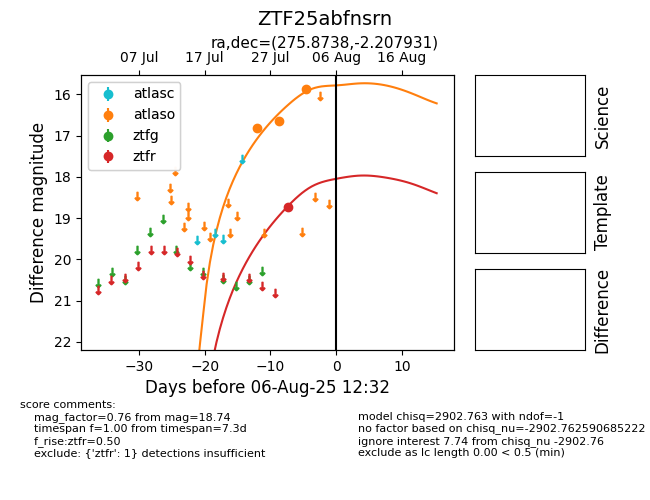

Target ZTF25abfnsrn at 2025-08-06 17:07, see:
FINK: fink-portal.org/ZTF25abfnsrn
Lasair: lasair-ztf.lsst.ac.uk/objects/ZTF25abfnsrn
ALeRCE: alerce.online/object/ZTF25abfnsrn
alt names
ZTF25abfnsrn (ztf,fink)
coordinates:
equatorial (ra, dec) = (275.8738,-2.20793)
galactic (l, b) = (27.7641,+5.19773)
photometry
last atlaso=15.87, ztfr=18.74
3 atlaso, 1 ztfr detections
